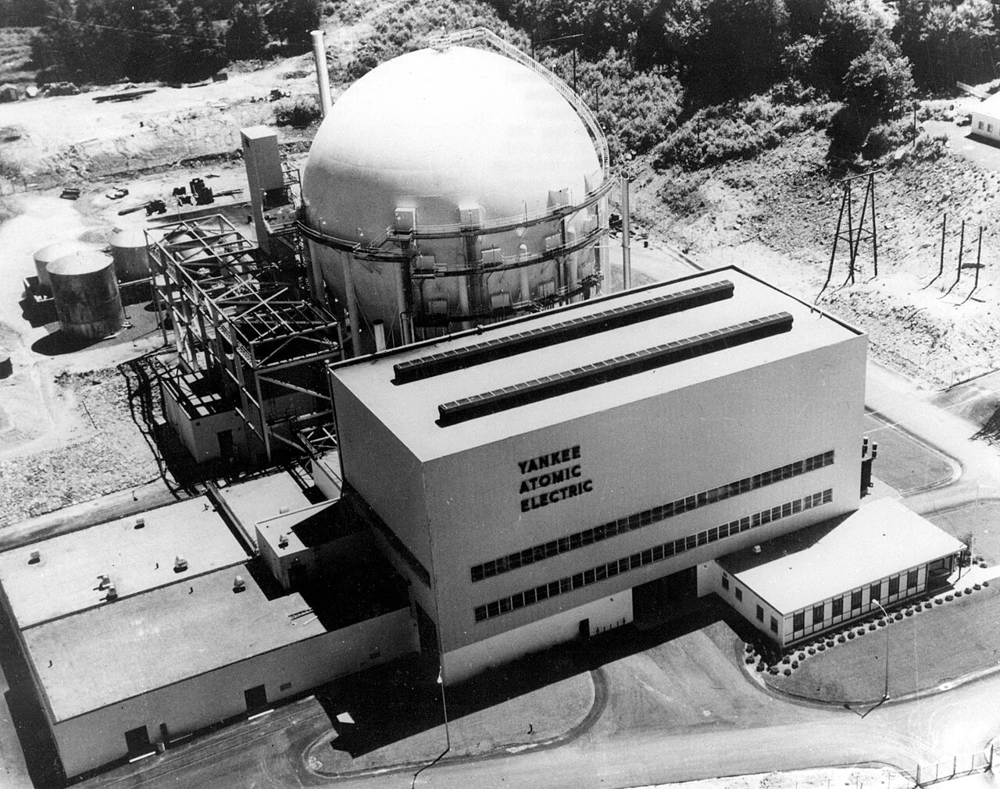
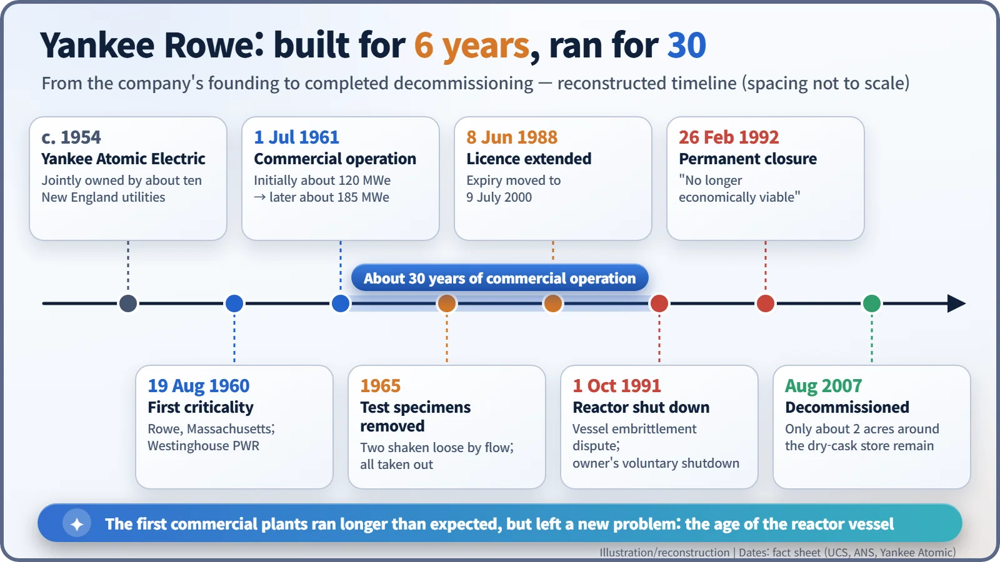
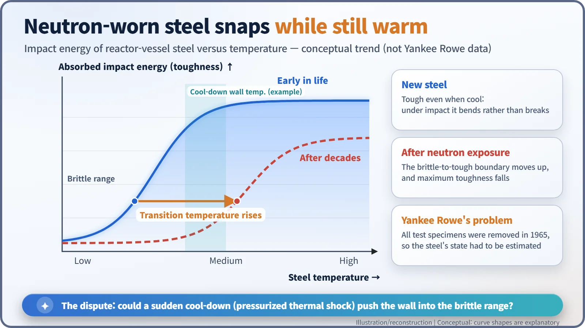
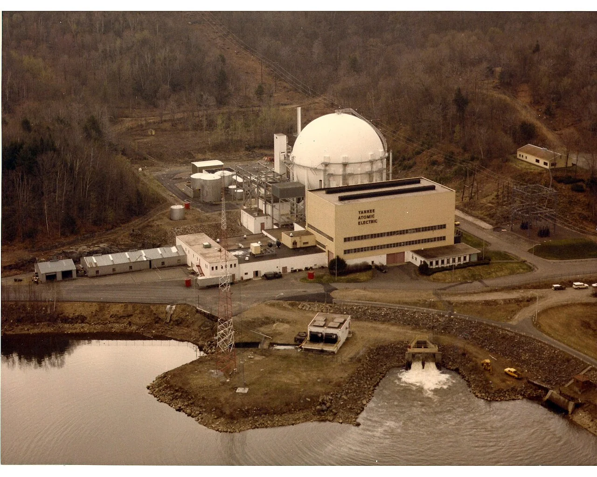

Nuclear History · 187
The Little Steel Bar That Decided a Plant's Fate — Yankee Rowe, New England's Long-Lived Nuclear Pioneer (1960)
Expected to run for six years, the Westinghouse PWR at Rowe, Massachusetts ran for thirty, until the age of its pressure vessel became the question.
Yankee Rowe, a Westinghouse pressurized water reactor in western Massachusetts and the first nuclear plant in New England, went critical on 19 August 1960 and began commercial operation on 1 July 1961. Built as a demonstration expected to last about six years, it ran for some thirty, until doubts about its ageing reactor vessel led to shutdown in October 1991 and permanent closure in 1992. Its decommissioning, finished in 2007, became an early model for the industry.
A little steel bar
Picture a square steel bar about the length of your finger, with a single V-shaped notch cut into one face. It is a surveillance specimen, made from the same steel as a reactor's pressure vessel. Left inside the reactor and pulled out every few years to be struck with a pendulum hammer, it tells engineers how much the vessel steel has been weakened by neutrons. In 1965, at a power plant in the hills of western Massachusetts, every one of these specimens was taken out. Flowing coolant had shaken two of them loose, so the rest were simply removed. Twenty-six years later, that decision would help decide the plant's fate. The plant was Yankee Rowe, the first nuclear power station in New England. [3] [1]

Utilities pass the hat
The Atomic Energy Act of 1954 allowed private companies to own reactors. Soon afterwards about ten New England utilities pooled their money to form the Yankee Atomic Electric Company (sources give ten or eleven owners). Yankee was picked in the first round of the Atomic Energy Commission's Power Demonstration Reactor Program, which provided about $5 million for research and development and waived fuel-use charges for five years. The plant itself, however, was privately financed. [1] [2] [4]
The design was a Westinghouse four-loop pressurized water reactor (PWR). Water is kept under high pressure so it does not boil as it carries heat away from the core; steam is raised separately in steam generators. This was the type proven in submarines and at Shippingport, and Yankee even hired the same construction firm, Stone & Webster. [2] [4]
Construction began in 1958 beside the Deerfield River in the small town of Rowe. The reactor first went critical on 19 August 1960. After start-up testing it began sending power to the grid in early 1961 at about 110–120 MWe, and commercial operation began on 1 July 1961. The final cost came in below the revised estimate, and the AEC called the plant "the nuclear success story of 1961". [2] [3] [4]
A six-year experiment that worked for thirty
Yankee was expected to run for about six years as a demonstration plant. Instead, its output was raised step by step to 600 MWt of heat and about 185 MWe of electricity (sources range from 167 to 186 MWe), and it supplied New England for some thirty years. Together with Dresden-1, a boiling water reactor that began commercial power a year earlier, it convinced the industry that utility-run light water reactors could pay their way. By 1991 it was the oldest operating nuclear plant in the United States. [1] [2]

An argument about old steel
The problem was the pressure vessel: a steel pot about 20 cm (8 inches) thick and weighing 175 tonnes. Over decades, neutrons from the core bombard it. The steel gradually loses toughness, and the temperature below which it turns brittle, the transition temperature, creeps upward. In normal operation the vessel is hot and safe. But if, in an accident, cold emergency water floods in while the system is still under pressure, the wall can cool sharply while highly stressed. Engineers call this pressurized thermal shock. With surveillance data, Yankee could have offered measurements. Without them, it had to rely on calculations and estimates. [2] [3]

In June 1988 the Nuclear Regulatory Commission (NRC) extended the plant's operating licence to July 2000. But in September 1990 an NRC engineer wrote in an internal memo: "Perhaps it is time to quit being polite in our rejection of the licensee's estimates…." On 4 June 1991 the Union of Concerned Scientists (UCS) and the New England Coalition on Nuclear Pollution petitioned for an immediate shutdown. [3]
On 31 July the NRC denied the petition, finding that continued operation would not pose "an undue risk to the public health and safety". It added a condition: "In no event will plant operation beyond April 15, 1992, be permitted until these uncertainties have been resolved." The owner proposed measures it said would cut the chance of vessel failure twentyfold. On 30 September NRC staff concluded that the plan leaned heavily on assumptions about pump reliability and recommended that the plant "be shut down until the NRC is satisfied". On 1 October 1991, the day before a scheduled Commission meeting, the owner shut the reactor down voluntarily. [3]
On 26 February 1992 the owners announced that Yankee would close for good. The official reason: the plant "was determined to be no longer economically viable". With the tests and criteria for a restart still undefined, spending heavily to reopen made little sense. Opinions still differ. UCS saw the core problem as running a plant whose vessel condition could not be measured; some in the nuclear industry point to later test results to argue that the steel was probably tough enough. [1] [2] [3]
A textbook in taking a plant apart
Yankee then became a precedent of another kind: how to clean up afterwards. Between 1992 and 2007 every building was removed and the site restored. In 2003 the spent fuel was moved into 16 dry storage casks. In August 2007 the NRC told the company that the site was fully decommissioned, shrinking the licensed area to about 2 acres around the cask store. The bill came to about $608 million, far above the first estimate of $368 million. [1] [5]

Today, data from pressure-vessel surveillance specimens remain central evidence whenever a plant asks to run longer. Few stories show as vividly as Yankee Rowe's why those small notched bars matter. It was a first-generation plant that ran far longer than anyone planned, and the first to confront, head-on, the fact that reactors grow old.